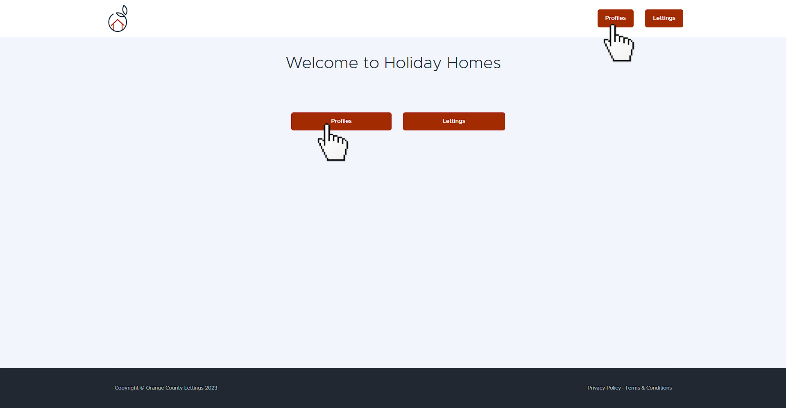
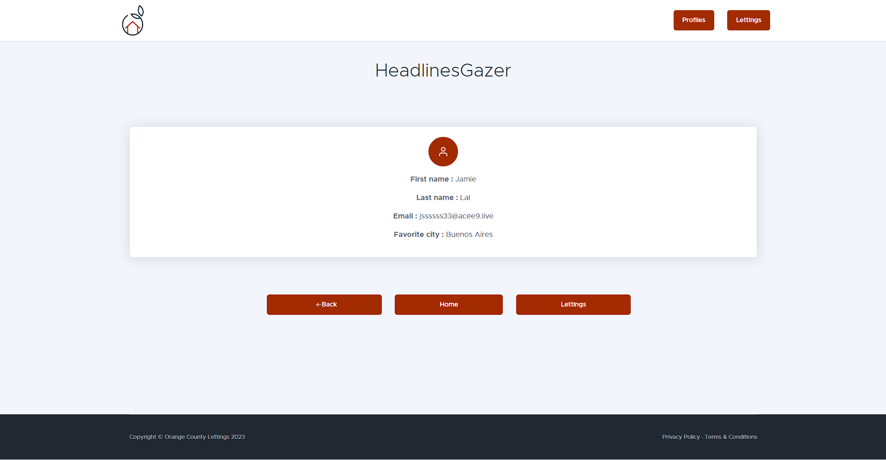
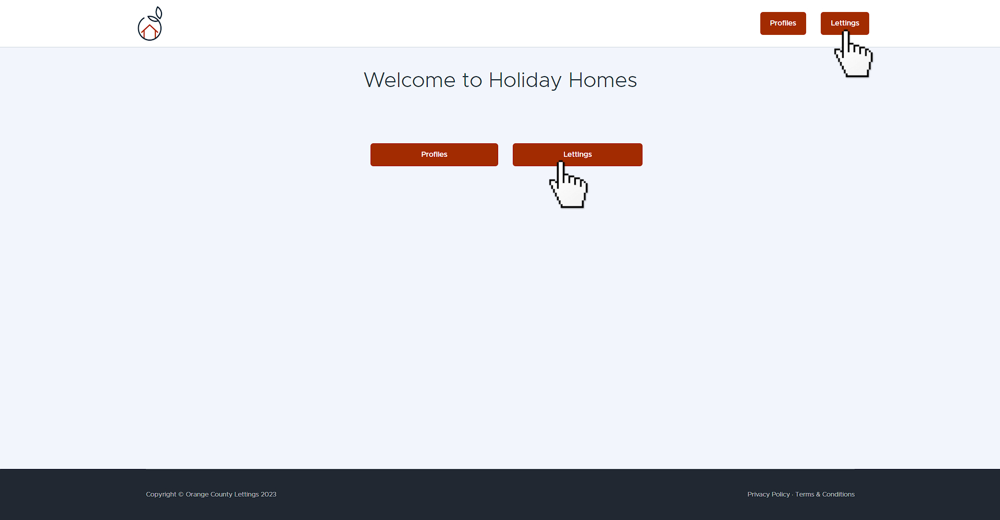
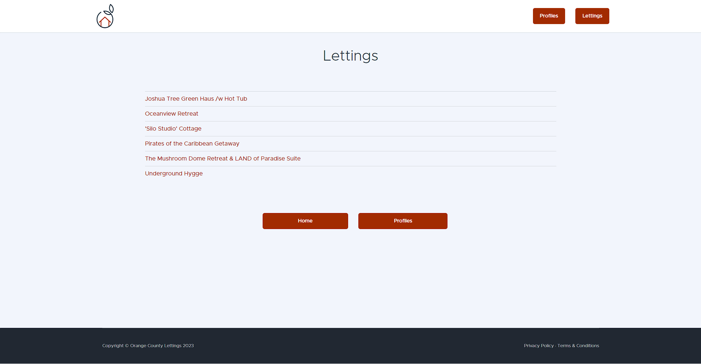
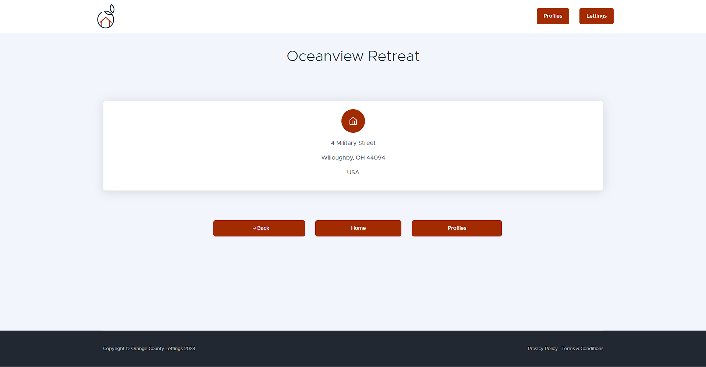
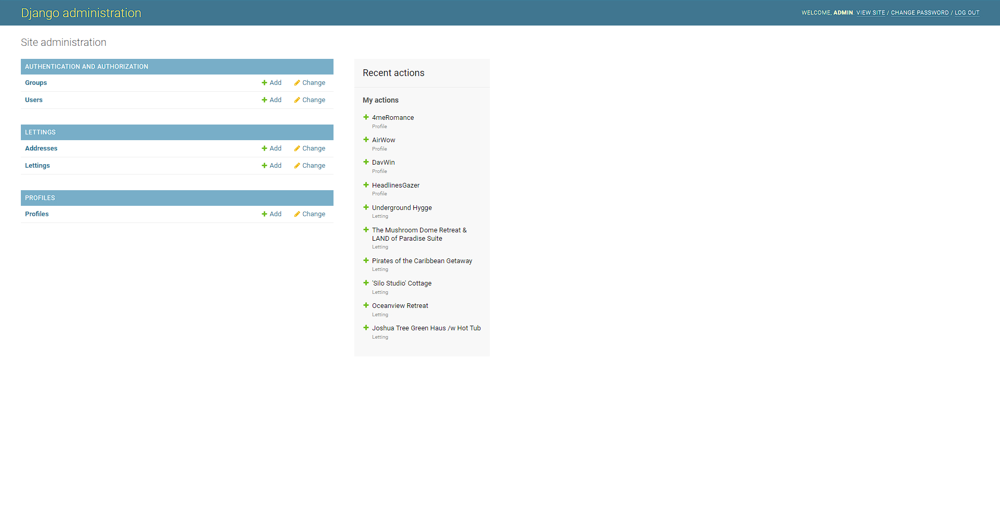
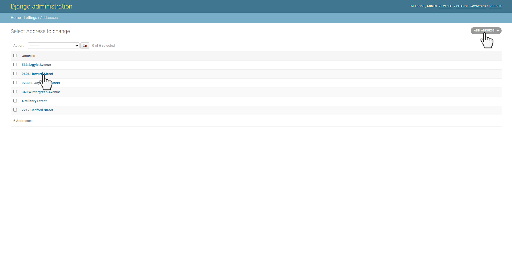
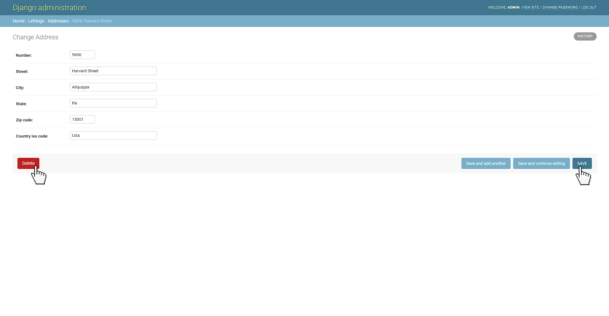

Guide d’utilisation¶
Accès au site de l’application¶
Pour accéder au site de l’application, vous pouvez y accéder de deux manières différentes :
Accès via le projet déployé¶
Pour cela rendez-vous sur http://votre_adresse_ip_publique_EC2/
Pour l’exemple, ce lien est disponible pour une instance EC2.
Important
Le protocole HTTPS n’est pas disponible pour l’accès au site. Le protocole à utiliser doit bien être le protocole HTTP.
Accès localement¶
Lancez votre serveur via :
python manage.py runserver
# OU
docker compose up
Et ensuite rendez-vous dans http://localhost:8000/
Accès aux profils¶
Liste des profils¶
Pour accéder à la liste des profils, vous pouvez naviguer via l’interface utilisateur :
{kind=link}
Ou bien via l’URL directe /profiles/
Vous arriverez sur la page de la liste des différents profils.

Détails des profils¶
Pour accéder aux détails d’un profil, vous pouvez naviguer via l’interface utilisateur en cliquant sur un des profils disponibles.
Ou bien via l’URL directe /profiles/<username>/
Vous arriverez sur la page désirée.
{kind=link}
Accès aux locations¶
Liste des locations¶
Pour accéder à la liste des locations, vous pouvez naviguer via l’interface utilisateur :
{kind=link}
Ou bien via l’URL directe /lettings/
Vous arriverez sur la page de la liste des différentes locations.
{kind=link}
Détails des locations¶
Pour accéder aux détails d’une location, vous pouvez naviguer via l’interface utilisateur en cliquant sur une des locations disponibles.
Ou bien via l’URL directe /lettings/<letting_id>/
Vous arriverez sur la page désirée.
{kind=link}
Revenir à la page principale¶
Pour revenir à la page principale, vous pouvez soit revenir à la racine / via l’URL, ou bien vous pouvez naviguer via l’interface utilisateur.
{kind=link}
Interface administrateur¶
Pour accéder à l’interface utilisateur, il faut passer obligatoirement via l’URL en tappant /admin/
Lien de l’interface d’administration
Connexion¶
Vous arriverez à l’interface de connexion :
Username:
adminPassword:
Abc1234!
Une fois connecté, vous accèderez à l’interface.
{kind=link}
Intéraction avec un modèle¶
Ajouter¶
Si vous cliquez sur un des modèles, vous pourrez accéder à l’interface d’administration de celui-ci. Prenons l’exemple des adresses.
{kind=link}
Vous pourrez alors ajouter une adresses en cliquant sur ADD ADDRESS
{kind=link}
Remplissez les champs demandés puis enregistrez en cliquant sur SAVE. Si vous voulez en créer plusieurs, vous pouvez cliquer sur Save and add another.
Modifier ou supprimer¶
En cliquant sur une des adresses, vous accèderez à ses informations.
{kind=link}
Ici, vous pourrez modifier les informations nécessaires et cliquer sur SAVE pour enregistrer les modifications.
Sinon, vous pouvez supprimer l’adresse en cliquant sur Delete.